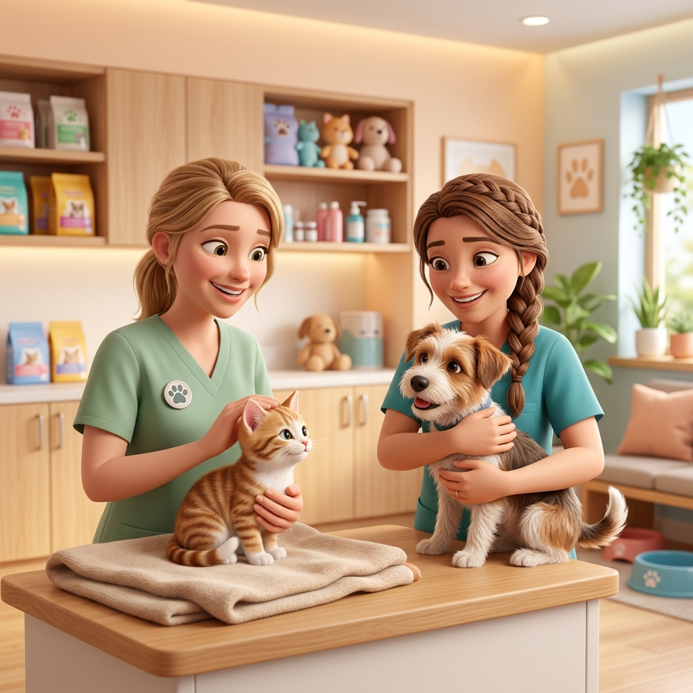

El trato amoroso y profesional que tu hijo de 4 patas merece 🐶🐱
En Veterinaria Aiken las Dra. Marta, Yanet y todo el equipo médico atienden a perros y gatos desde cachorritos con la máxima calidez, estudios previos completos y precios accesibles.

"Llevé a mi gata a castrar y le hicieron análisis previos para saber que todo estuviera en orden. ¡Muy buen trato y precio accesible!"
Servicios Veterinarios Integrales
Cuidado desde cachorros hasta sus años maduros
Clínica y Consulta Médica
Diagnóstico preciso y seguimiento cariñoso para perros y gatos de todas las edades.
Castraciones de Alta Seguridad
Procedimientos quirúrgicos responsables acompañados de análisis pre-quirúrgicos completos.
Análisis y Estudios Clínicos
Realización de todo tipo de estudios para detectar a tiempo cualquier problema y mejorar la salud de tu mascota.
Vacunación y Cachorros
Planes sanitarios desde los primeros meses de vida para protegerlos y acompañarlos siempre.
Lo Que Dicen Quienes Confían en Aiken
Más de 340 familias avalan nuestro compromiso diario
"Excelente veterinaria! y muy buen trato a los animales. Lleve a mi gata a castrar y le hicieron análisis y todo para saber que estaba todo en orden… el precio es accesible pero por lo bien que trataron a mis michis, pago lo que sea."
"Excelente atención de todas las veterinarias que trabajan acá. Todas mis mascotas desde cachorros son pacientes de la vete y siempre nos atienden excelente cuando vamos."
"Atención excelente y muy buenos profesionales. Hacen todo tipo de estudios para mascotas. Mi gatita Yla se los agradece esta mucho mejor. 🙏"
Vení a Conocernos
Te esperamos en Av. Juan XXIII para cuidar a tu compañero con todo el amor.
Av. Juan XXIII 197, B1832 Lomas de Zamora, Prov. de Buenos Aires
Plus Code: 6HJ6+WX Lomas de ZamoraAbierto hoy · Cierra a las 20:00 hs